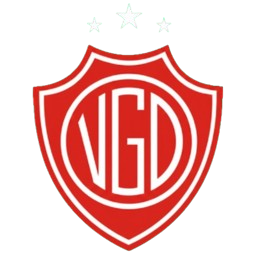
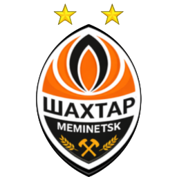

PC/2 · R04 • Cartola · R22
✓ Encerrado
ValeGuiDoce ★
63 × 77

Shaktar
Resumo do confronto
ValeGuiDoceComparativoShaktar
63,00Pontuação total77,00
PedroCapitãoViveros
GabrielReserva de LuxoSamuel Lino
—Patrimônio—
Ver escalações
Dados esportivos do confronto preservados conforme o estado oficial da rodada.